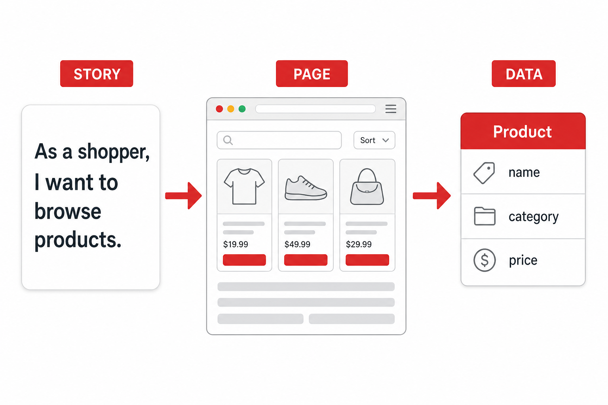
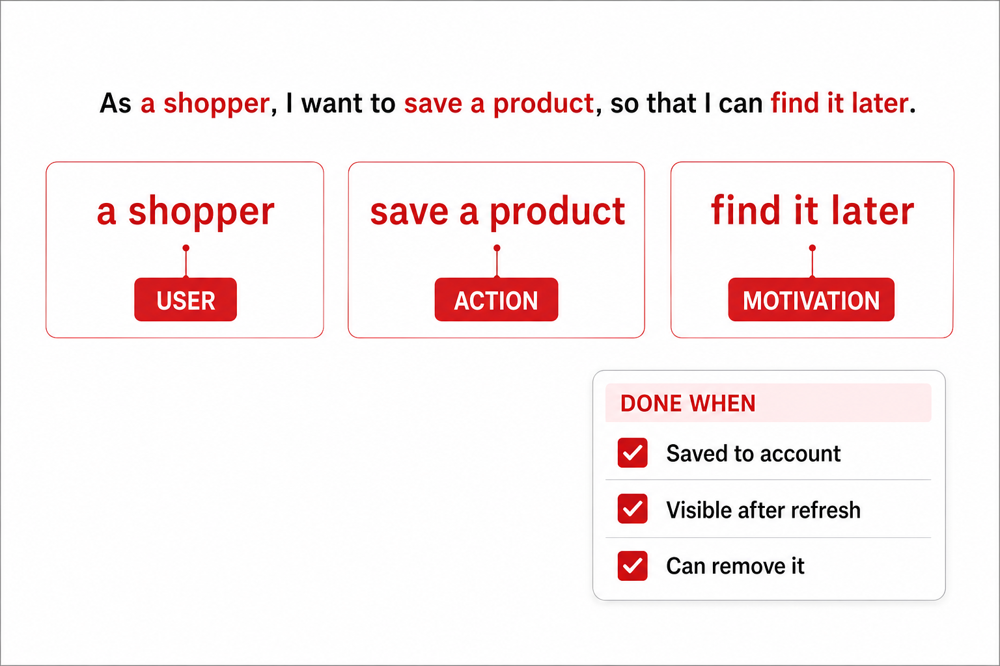

A useful user story tells you what page, data, and success condition need to exist. Vague stories only decorate the document.
Stories describe the app owner, not the user.
The benefit is generic — “so I can be organized.”
Without a done condition, the story can’t guide coding.
A good story includes a user type, an action, a benefit, and a testable finish line.
Shopper, host, member, admin…
Search, book, post, filter, reorder.
Why the user cares right now.
What the app must store or fetch.
How you know it works.
The stronger story implies pages, models, and a checklist — categories, filters, details.

Reorder a past purchase without searching again.
Cancel or reschedule without calling.
Find replies to my post since my last visit.
The story should reveal why the user opens the site and what information matters.
“What nouns and verbs are missing from this story before it can guide code?”

Specific user · Concrete action · Real motivation · Data needed · Done condition.